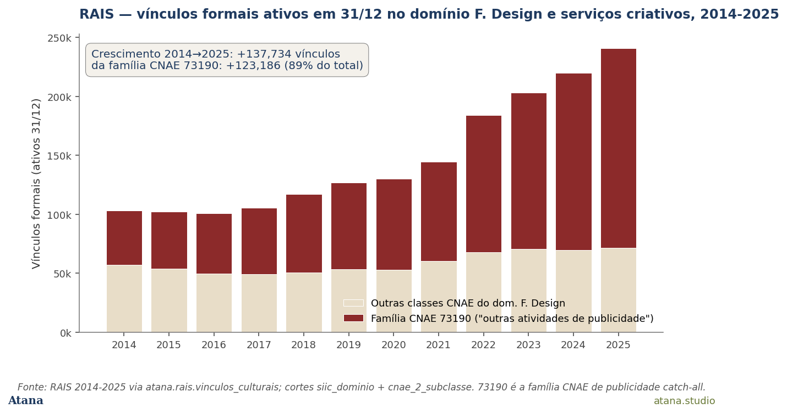
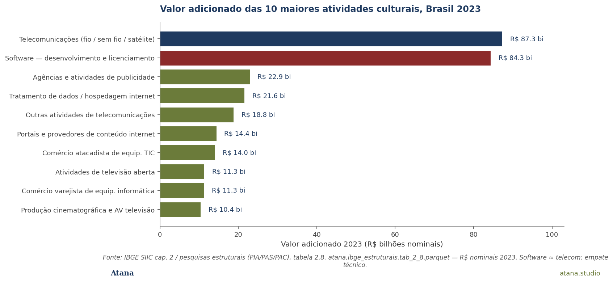
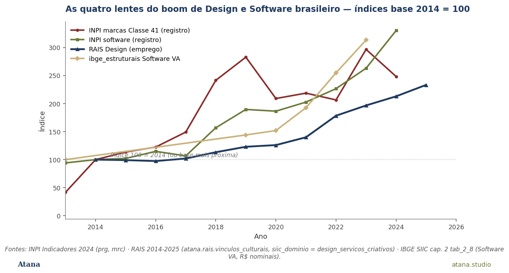

Sinal
Em algum momento entre 2014 e 2024, quatro fontes administrativas brasileiras independentes começaram a registrar a mesma coisa: o segmento Design e Software como a face mais dinâmica da economia cultural do país. INPI vê os depósitos anuais de programas de computador saltando de 661 (2000) para 5.312 (2024) — ×8,0; e os registros de marca da Classe Nice 41 (educação, atividades culturais) saltando de 889 para 19.447 — ×21,9. RAIS vê os vínculos formais ativos no domínio F. Design e serviços criativos passando de 103 mil (2014) a 241 mil (2025) — +133 %. Cadastro dos MEIs vê 622 mil microempreendedores culturais individuais nesse mesmo domínio em 2022 — 44,9 % de todos os MEIs culturais brasileiros. E a conta de produção do IBGE mostra a atividade "desenvolvimento e licenciamento de programas de computador" como a segunda maior atividade cultural por valor adicionado, R$ 84,3 bi em 2023 — praticamente empatada com telecomunicações (R$ 87,3 bi), e juntas as duas atividades respondem por 44 % do valor adicionado da economia cultural brasileira inteira.
Quatro fontes oficiais, quatro registros independentes, mesmo sinal estrutural. É o caso mais limpo no corpus atana-data até hoje de convergência empírica entre lentes administrativas brasileiras sobre um único cluster setorial. O boom é real e está bem documentado.
E está sendo medido por quatro instrumentos que nunca foram desenhados para conversar entre si.
Por que importa
A política cultural brasileira tem hoje, na conversa pública, uma narrativa de transformação digital. A indústria criativa cresce, design escala, software vira atividade cultural reconhecida. Esta Nota tem um propósito duplo: dar suporte empírico à parte dessa narrativa que é defensável (todas as quatro lentes concordam: o boom é estrutural), e ao mesmo tempo dar nome ao que a narrativa esconde — cada lente está medindo uma coisa diferente sob o mesmo rótulo. O "Design" da RAIS é, em 89 % do seu crescimento, vínculos numa única CNAE catch-all de publicidade. O "Design" dos MEIs é o microempreendedor unipessoal de baixa renda (23 % no CadÚnico). O "Software" do INPI é o ato administrativo de depositar um programa, não a empresa que o desenvolve. O "Software" do IBGE estruturais é uma atividade econômica formal que, por convenção SIIC, é classificada como cultural-periférica e não cultural-central.
Três das quatro lentes têm sido lidas em isolamento em pesquisas anteriores; nenhuma análise prévia, até onde se sabe, juntou as quatro. Esta Nota faz essa junção — e usa o resultado para tornar visível o que a Nota #03 chamou de pluralismo metodológico: a escolha da classificação é a escolha da conclusão.
As quatro lentes em uma frase
- INPI Indicadores 2024. Quantos atos de registro de propriedade industrial culturalmente relevantes são feitos por ano no Brasil. Atos.
- RAIS 2014–2025. Quantos contratos formais ativos em 31/12 existem no domínio F. da classificação SIIC. Contratos.
- Cadastro dos MEIs 2022. Quantos microempreendedores individuais culturais existem, sob qual CNAE, com qual perfil socioeconômico. Pessoas-firma.
- IBGE estruturais 2013/2019–2023. Quanto valor adicionado é gerado pelas empresas culturais formalmente constituídas, por atividade. Reais.
Nenhuma das quatro é melhor que as outras. Cada uma mede um fato distinto, mensurável e relevante para a política pública. A pergunta interessante é o que acontece quando se olha as quatro juntas.
O que os dados dizem
1. INPI: a economia se importa com propriedade industrial cultural
Os depósitos anuais de programas de computador no INPI seguem uma curva de aceleração contínua: 661 em 2000, ~1.500 em 2013 (×2,3), ~3.000 entre 2018 e 2021 (×4,5), e 5.312 em 2024 (×8,0). Não há um ano de inflexão único; é crescimento estrutural sustentado por 24 anos. Os registros de marca da Classe Nice 41 — que cobre "Educação, atividades desportivas e culturais" e é a classe Nice mais próxima de mensurar registro cultural-criativo — saíram de 889 (2000) para 19.447 (2024), ×21,9. O Brasil hoje registra mais marcas culturais por ano do que registrava ao longo de cinco anos no início dos 2000.
O que essa lente vê. O ato administrativo de proteger PI cultural se generalizou no Brasil. Pessoas físicas e jurídicas reconhecem o ativo intangível como digno de registro formal. O INPI não diz nada sobre se o ativo gera renda, apenas que o titular o tratou como digno de existir formalmente. É o sinal mais antigo (porque a série começa em 2000) e mais robusto: mudança de regime de informalidade quase total para uma economia que se importa com propriedade industrial.
2. RAIS: os contratos formais em Design dobraram — e quase tudo aconteceu em uma única CNAE
Os vínculos formais ativos em 31/12 no domínio F. Design e serviços criativos cresceram +133 % entre 2014 e 2025 (103.345 → 241.079). Confirma e amplia em ritmo o sinal +98 % reportado em análises anteriores até 2023 — a extensão recente do painel RAIS para 2024 e 2025 mostra que o setor continuou acelerando após a pandemia, não desacelerou.
A composição desse crescimento, porém, é diferente do que o agregado sugere. A família CNAE 73190 — subclasses 7319001 a 7319099, todas variantes de "Outras atividades de publicidade não especificadas anteriormente" — saiu de 46.214 vínculos no domínio em 2014 para 169.400 em 2025. Foram +123.186 vínculos novos numa única família de CNAE, ou 89 % do crescimento total da força de trabalho do domínio F. Mais granular ainda: a subclasse única 7319002 ("publicidade outras-não-especificadas") sozinha respondeu por +109.779 vínculos, ou 80 % do crescimento total.

Figura 1 — Vínculos formais culturais ativos em 31/12 no domínio F. Design e serviços criativos, Brasil, 2014–2025. A família CNAE 73190 (publicidade catch-all) responde por 89 % do crescimento total no período. O "boom de Design" da RAIS é, empiricamente, em larga medida um boom de publicidade-catch-all. Fonte: RAIS via Base dos Dados, atana.rais.vinculos_culturais 2014–2025.
O que essa lente vê. A RAIS vê emprego dobrando no domínio F. Mas a quase totalidade do que ela conta como crescimento aconteceu em uma única CNAE de propósito amplo. Duas leituras são igualmente compatíveis com os dados: (a) houve mudança classificatória — empresas migraram para a catch-all 73190 talvez por incentivo do eSocial; ou (b) o crescimento é real, mas é crescimento em micro-agências de publicidade digital, marketing de redes sociais, design para influência — atividades novas que não tinham CNAE óbvia e foram catalogadas na catch-all. As duas hipóteses não são excludentes. O ponto importante é que o agregado +133 % é fortemente sensível à inclusão de uma única classe.
3. CEMPRE: 45 % dos microempreendedores culturais individuais são Design
Dos 1.387.480 MEIs culturais registrados no Cadastro dos MEIs em 2022, 622.734 estão no domínio F. Design — 44,88 % do total. É a maior concentração de qualquer domínio cultural, e por larga margem: o segundo é Artes visuais e artesanato (179.914 MEIs, 13 %); o terceiro, Livro e imprensa (109 mil, 8 %). Combinado com o achado da Atana Note #10 de que 20,5 % dos MEIs culturais estão inscritos no CadÚnico e 9,2 % recebem Bolsa Família — e que em F. Design especificamente essas taxas sobem para 23,1 % CadÚnico e 11,1 % PBF — o retrato é claro: o "boom de Design" da Lente 2 tem como contraparte sociológica uma base de trabalhadores formais-mas-precários sob a figura unipessoal MEI.
4. IBGE estruturais: software é a segunda maior atividade cultural por valor adicionado
A conta de produção das pesquisas estruturais do IBGE mede o valor adicionado por atividade econômica. Em 2023, dentre as atividades culturais individuais (excluindo agregados de domínio):
| Pos. | Atividade | VA 2023 (R$ bi) |
|---|---|---|
| 1 | Telecomunicações por fio, sem fio e por satélite | 87,3 |
| 2 | Desenvolvimento e licenciamento de programas de computador | 84,3 |
| 3 | Agências e atividades de publicidade | 22,9 |
| 4 | Tratamento de dados e hospedagem na internet | 21,6 |
| 5 | Outras atividades de telecomunicações | 18,8 |

Figura 2 — As 10 maiores atividades culturais por valor adicionado, Brasil, 2023, em R$ bilhões nominais. Software (R$ 84,3 bi) está praticamente empatado com telecomunicações (R$ 87,3 bi) na primeira posição; as duas juntas representam 44,3 % do valor adicionado total da economia cultural brasileira (R$ 387,9 bi). Fonte: IBGE SIIC capítulo 2 (pesquisas estruturais PIA/PAS/PAC), tabela 2.8.
Em nominal não-deflacionado, o VA de Software passou de R$ 26,9 bi em 2013 para R$ 84,3 bi em 2023 — ×3,1 em uma década —, o ritmo mais rápido entre as 10 maiores atividades. Telecom no mesmo período cresceu ×1,6, F. Design (sem software) ×2,2, e o total cultural ×1,95. Software cresceu praticamente o dobro do total do setor cultural. Em termos reais, deflacionado a R$ de 2023, o ritmo é mais modesto (cf. Análise 14 — total cultural +9,7 % real em uma década), mas software permanece a atividade que mais cresceu em ambos os regimes.
O que essa lente vê. Dentro do que o IBGE chama de "economia cultural", a atividade economicamente mais densa e a que mais cresce é o software. Software é tecnicamente classificado como atividade cultural periférica pela SIIC, parte de TIC, não atividade cultural central. Mas isso é convenção, não medição empírica: operacionalmente, software é o setor central da economia cultural brasileira por valor.
Onde as quatro lentes concordam — o boom é estrutural
A figura 3 normaliza as quatro séries para base 2014 = 100 (ou base mais próxima por série). As quatro curvas crescem; as três que têm base 2014 (INPI Classe 41, INPI software, RAIS Design) crescem em ritmo similar; o Software VA cresce mais devagar em índice porque sua base 2013 já era elevada.

Figura 3 — As quatro lentes do boom de Design e Software brasileiro, indexadas a 100 em 2014 (ou base mais próxima por série). As quatro fontes administrativas independentes convergem na direção de crescimento — no intervalo 2014–2023 onde existem dados em todas as quatro: INPI software ×3,3, INPI Classe 41 ×2,5, RAIS Design ×2,3, IBGE estruturais Software VA ×2,2. Fontes: INPI Indicadores 2024 · RAIS 2014–2025 · IBGE SIIC capítulo 2 tab_2_8.
A consensualidade do sinal é o achado positivo. As quatro categorias administrativas brasileiras que mais frequentemente desempatam medições do setor cultural — registro, emprego, empresa e valor — concordam que Design e Software é a parte mais dinâmica da economia cultural brasileira na última década. Nenhuma outra agregação setorial do corpus tem confirmação quádrupla equivalente: música tem divergência label-side × author-side (Note #08); audiovisual tem o choque AV 2024 (Análise 10); livro e patrimônio retraem ou estabilizam (Note #09). Design e Software é o único cluster em que as quatro lentes convergem na direção positiva e em ritmo similar.
Onde divergem — o pluralismo metodológico em ação
A convergência da seção anterior é o achado principal. Seu valor analítico, porém, depende da divergência metodológica que cada fonte traz consigo. Cada uma das quatro está medindo uma coisa diferente sob o nome "Design e Software".
(a) A RAIS conta vínculos CLT no domínio F.; mas 89 % do crescimento recente nesse domínio aconteceu em uma única família CNAE de publicidade catch-all. Quando essa lente diz "Design dobrou", o que ela empiricamente mede é "vínculos com CNAE publicidade-outras dobraram". Pode ou não corresponder a um boom de design no sentido editorial-cultural; provavelmente corresponde a um boom de prestação de serviço de marketing-publicidade-redes-sociais.
(b) O Cadastro dos MEIs conta uma figura jurídica fundamentalmente distinta — o microempreendedor individual unipessoal, com teto de faturamento. As populações da RAIS Design e da MEIs Design não se somam: um MEI Design só aparece nos vínculos RAIS se ele tiver sido contratado por outra empresa, caso em que é o vínculo CLT (e não a atividade MEI) que é contado.
(c) Os depósitos do INPI são atos administrativos, não fluxo econômico. Um indivíduo pode depositar um programa sem ter atividade econômica alguma; uma empresa pode operar por anos gerando VA sem depositar nada novo. Apesar disso, as duas séries — INPI software e IBGE software VA — crescem juntas, o que sugere que sob a divergência conceitual há um processo subjacente comum: a expansão da economia brasileira de software como tal.
(d) O domínio F. Design da SIIC é, na lente RAIS, dominado por publicidade-catch-all; é, na lente MEIs, dominado por microempreendedorismo unipessoal de baixa renda; e é, na lente VA, excluído (software fica em periferia, F. central tem apenas 8 % do VA cultural total). As três versões de "F. Design" têm perfis sociais, condições contratuais, capacidade de captura de renda e relação com a IA generativa fundamentalmente distintos. O agregado "Design e Software cresceu" oculta essa heterogeneidade.
Implicações
(i) Política cultural setorial. Editais e instrumentos de fomento desenhados em torno do conceito de "Design e indústrias criativas" precisam ser explícitos sobre qual das três populações são alvo. Um edital orientado para MEI cultural design (a maior, 622 mil pessoas, baixa renda) é fundamentalmente diferente de um edital orientado para empresas de software (a mais densa em valor adicionado) ou para micro-agências de publicidade-CLT (a maior em vínculos formais). Hoje, a homogeneidade aparente do agregado mascara essa decisão.
(ii) Política regulatória sobre IA generativa. O dado de que software é a segunda maior atividade cultural brasileira por VA (R$ 84,3 bi em 2023) e cresce mais rápido do que qualquer outra atividade cultural posiciona o tema da regulação de IA treinada em código como um tema de política cultural, não apenas de propriedade intelectual ou de mercado de trabalho TI. Esse enquadramento ainda não está na conversa brasileira. O fato de que os depósitos no INPI cresceram ×8 em 24 anos sugere que o setor já se vê como titular de PI relevante; a próxima rodada regulatória precisa reconhecer isso.
(iii) Política de mensuração. O domínio F. Design da classificação SIIC precisa ser desagregado — em pelo menos três sub-populações: publicidade catch-all, design especializado (artes visuais, gráfico, arquitetura, fotografia), e software-como-atividade-cultural-central (que hoje cai em periferia, não em F.). Sem essa desagregação, qualquer leitura agregada do domínio gera erro sistemático que se acumula em cada nova safra de pesquisa.
Próximas pesquisas
A Nota suscita três próximos passos imediatos: (1) uma sondagem qualitativa da CNAE 7319002 — extrair uma amostra de razões sociais para entender o que de fato está sendo classificado nessa catch-all que absorveu 110 mil vínculos novos em uma década; (2) uma comparação cross-source comparável com México (INEGI CSCM), Argentina (SInCA) e Colômbia (DANE CSECC), todos no corpus, para testar se a estrutura "publicidade-catch-all + MEI + software-periferia" é específica brasileira ou é regional; e (3) cruzamento com a Análise 25 (AI Exposure × VA) para testar a hipótese de que as atividades de maior VA são também as de maior exposição à IA generativa — primeira intuição: software sim, publicidade-catch-all sim, design especializado parcialmente.
Fontes
- INPI — Indicadores de Propriedade Industrial, anuário 2024. Tabelas
prg_total_geralemrc_registro_mrc_diret_ano_classe. Coberturaatana.inpi.*. - RAIS — Relação Anual de Informações Sociais (MTE), via Base dos Dados (
br_me_rais). Painel 2014–2025 ematana.rais.vinculos_culturais(~17M vínculos-ano). - Cadastro dos MEIs — IBGE-RFB, ano-base 2022. SIIC capítulo 1, tabela 1.3.2.
atana.ibge_cempre.tab_1_3_2.parquet. - Pesquisas estruturais IBGE — PIA + PAS + PAC, SIIC capítulo 2. Tabela 2.8 (Valor Adicionado).
atana.ibge_estruturais.tab_2_8.parquet. Anos 2013 + 2019–2023. - Atana Análise 26 — O boom brasileiro de Design e Software em quatro lentes (
analise_26_design_software_4_lentes.md), versão estendida com 6 figuras, 19 checagens reprodutíveis (verify_a26.py), e apêndice metodológico completo. - Companion notes: Note #03 (sino-dependência, pluralismo metodológico em dois lentes); Note #08 (música em quatro lentes — divergência); Note #09 (RAIS panel — erosão silenciosa); Note #10 (CEMPRE × MEIs — formalização para baixo); Note #18 (OECD AI × IBGE — pluralismo aplicado à IA).
Como citar
ABNT. SILVA JUNIOR, João Roque da. INPI × RAIS × CEMPRE × IBGE Estruturais: o boom brasileiro de Design e Software em quatro lentes. Atana Notes, n. 19, jun. 2026. Disponível em: https://atana.studio/notes/19/. Acesso em: [data].
APA 7. Silva Junior, J. R. (2026, junho). INPI × RAIS × CEMPRE × IBGE Estruturais: o boom brasileiro de Design e Software em quatro lentes (Atana Note No. 19). Atana. https://atana.studio/notes/19/
Chicago (author-date). Silva Junior, João Roque da. 2026. "INPI × RAIS × CEMPRE × IBGE Estruturais: o boom brasileiro de Design e Software em quatro lentes." Atana Notes, no. 19 (junho). https://atana.studio/notes/19/.
BibTeX.
@techreport{silvajunior2026design,
author = {{Silva Junior}, Jo{\~a}o Roque da},
title = {{INPI} {\texttimes} {RAIS} {\texttimes} {CEMPRE} {\texttimes} {IBGE} {E}struturais: o boom brasileiro de {D}esign e {S}oftware em quatro lentes},
institution = {Atana},
type = {Atana Note},
number = {19},
year = {2026},
month = {jun},
url = {https://atana.studio/notes/19/},
note = {Preprint cit{\'a}vel; vers{\~a}o estendida em An{\'a}lise 26.}
}
Cita-as curta. Silva Junior (2026), Atana Note #19.
Sobre a Atana. A Atana é uma consultoria de políticas públicas voltada à economia criativa latino-americana na era agêntica. As Atana Notes são peças analíticas curtas, citáveis, baseadas no corpus atana-data (~23 esquemas, ~195 tabelas, cobertura 13/14 dos domínios FCS 2025 da UNESCO) e publicadas em atana.studio/notes/.
Versão 1.0 — junho de 2026. Companheira da Análise 26 (versão estendida) e da Atana Note #10 (CEMPRE × MEIs).